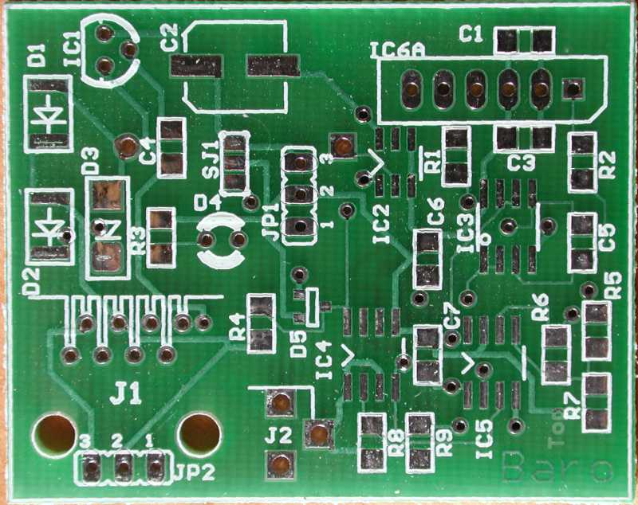
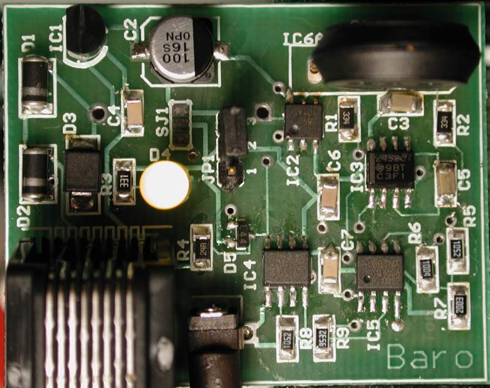
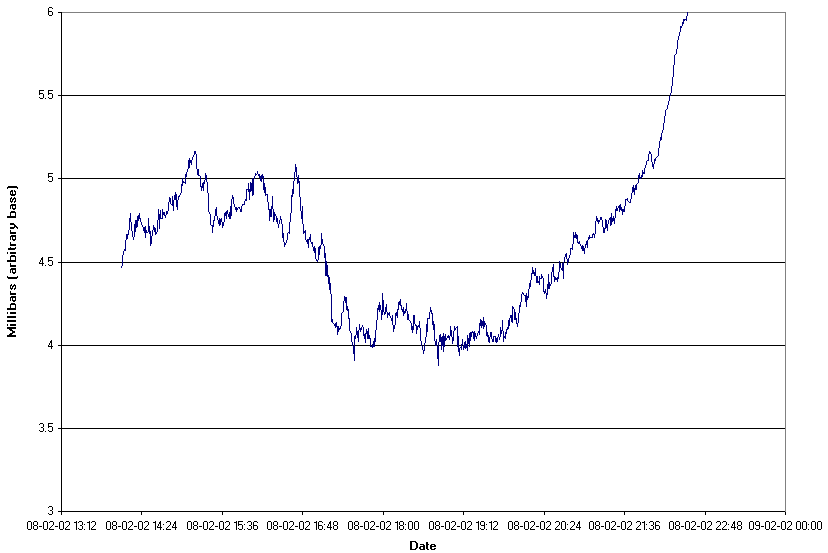
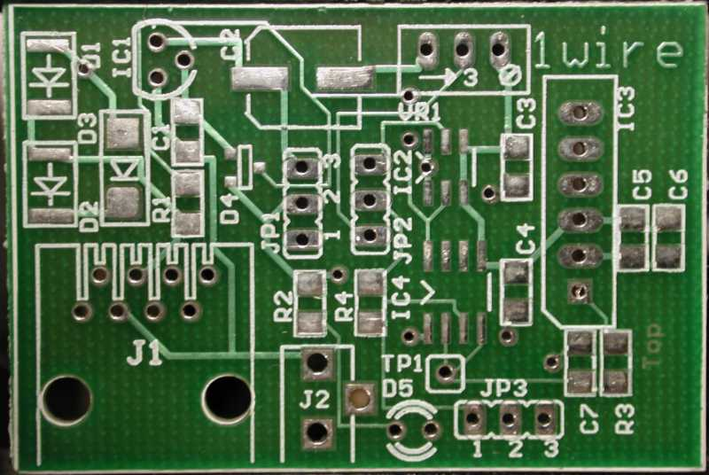
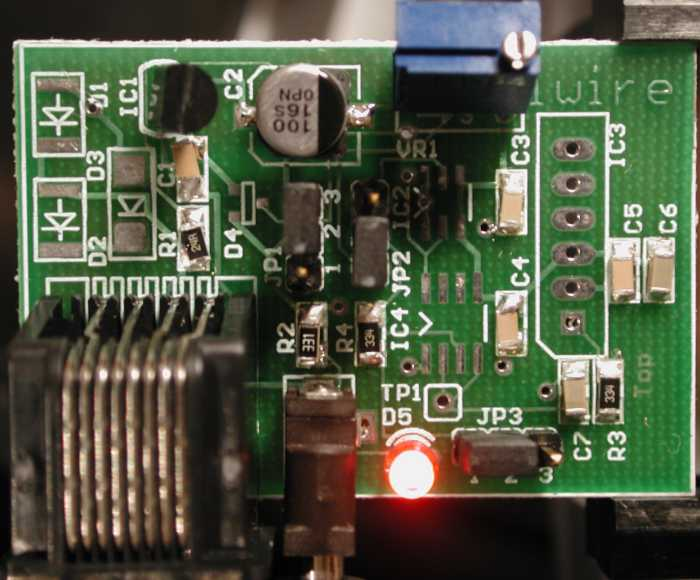

1-Wire Barometer - 2002 Update
This is a description and the ongoing story of my project to build a 1-wire
barometer based on the MPX4115A. The old version of this page is below.
Mark IV - Design finalized
I finished up the design over the Christmas break, and the result is this
schematic
(PDF). Getting a nice layout took a bit of time as I wanted to keep
the 1-wire connection away from the sensitive analog portions of the board.
I also wanted to keep the board small so that I could get 8 boards out
of the 100mm x 160mm panel size. In the end, I ordered 6 barometer boards
and two lightning counter boards (total $34 including shipping).
The board is designed to connect directly to Simon's hub and take either
regulated or unregulated power from it. Further you could solder a 3 pin
female header into JP2, and then it would mate directly with one of the
three pin headers in Simon's hub (I think I got the connections the right
way round!).
It is fully surge protected and should survive nearby lightning strikes.
YMMV.
There are no adjustable parts on the board, all calibration is performed
in software. The resolution of the system is around 0.005 millibars.
Mark IV - Boards arrive
Finally the boards arrive for the Mark IV (which is actually the second
PCB version -- its a long story). They took two weeks longer than necessary
since the wonderful USPS kept the package at the Post Office and didn't
send out the notice saying that they were holding it. The boards were produced
by Olimex. I had obtained the parts
required, some left over from earlier versions, some samples from TI,
some new from Digikey, and some samples
from Dallas/Maxim. As always, things
don't go quite according to plan -- the DS2890 samples that I requested
showed up with the wrong packaging (I got the 3 pin version rather than
the SO6 version), and Dallas/Maxim didn't have any DS2438 samples available.
Digikey came to the rescue!

Interestingly, the silk screen lines that extended over the edge of
the board have been omitted. There are supposed to be more lines outlining
J1 and J2 in the lower left that are not present. Compare with the original
board below. Now I do actually recall splitting the lines when I did the
first board!
I recruited my soldering proficient friend, and after bribing him with
dinner, we assembled the PCB -- which took about two hours. After visual
inspection, we applied power, and the LED didn't light up. Oh dear!

However, the silk screen that I had put on the board didn't identify
the orientation of the LED, and after turning the LED round, it lit up!
We plugged the 1-wire network cable into the board, and two devices appeared
on the network!
I fired up the driver that I had for the prototype version, and it stepped
the DS2890 until the a/d came into range. Since then, the pressure has
been rising fairly uniformly, and the driver has stepped the DS2890 six
times in the same direction. Now all that needs to be done is calibration.
Temperature Problems
After leaving this one running for a while, I left the desk lamp close
to it, and I noticed a distinct pressure change being reported. Oh dear.
After getting some freezer spray (from You-do-it
electronics), I discovered that it was principally the capacitor C5 that
was the cause. This is a 1µF ceramic capacitor (look at the middle
of the right hand edge above). Dan Awtrey from Dallas/Maxim
advised me to switch to a film capacitor as they are much more stable.
This capacitor is actually the part of the primary low pass filter for
the noise coming out of the sensor. I also realized that I was relying
on this capacitor behaving like an idealized one with no significant leakage
(it always maintained about 0.25 volts of offset).
A bit of circuit redesign later, and the introduction of another opamp
(only used to provide a low impedance 1.25V voltage source), this capacitor
now averages 0 volts. This makes it's leakage resistance much less important.
I also changed the voltage regulator for an LP2950
which is much more stable over temperature range. Happily it is
pin and form compatible with the regulator that I was using before. The
datasheet says that I ought to use 1µF tantalum capacitors on the
input and output. I didn't -- I left the 100µF electrolytic on the
output and nothing on the input. I need to crank up the scope to see if
it is stable or not.
The upshot is that things certainly seem much better after these changes.
The stability over temperature is much improved. The freezer spray no longer
has nearly such a dramatic effect.
Calibration Approach
I grab the pressures reported by four nearby NWS stations (KBED, KOWD,
KORH, KBOD) and record them, along with the raw parameters from the board
above. The idea is to be able to pick some calibration points from the
NWS data (when the pressure is roughly the same at all four stations, and
hence presumably the same at my station) and then use these (in conjunction
with the known altitude of my station) to calibrate. However, I suspect
that the temperature will also need to be factored in to get decent calibration.
This graph shows a few hours of data (this is not the temperature stable
version). The Y axis is (approximately) in millibars with an unknown offset!
What I don't know is whether the little ripples are real atmospheric changes,
artificial changes (say due to the forced hot air heating system), or instrumentation
errors (say due to temperature changes). Actually, I don't think that temperature
changes in my basement office would look like that. I'd be interested if
anybody else could draw a similar chart from their barometers (for comparison).
I applied a scope to the board and discovered that the power supply
line has a fair amount of high frequency noise on it. I suspect that this
feeds through the circuit to end up as noise of the order of 5 a/d counts.
I wonder if this could be solved by adding a 1uF capacitor across the A/D
input. This should filter out stuff above 100Hz or so.

I could get (with the prototype) calibration to a maximum error of 0.5mb
without compensating for temperature. However, my calibration was noticeably
different depending on which NWS station I used as the reference. Although,
now I look at the graph above, it would seem that to do much better would
require having a really close NWS station and trying to average out the
short term fluctuations.
History
I originally designed a general purpose experimenters
board. However, it was fairly large and complex. When the time finally
came to getting board manufactured, I discovered Olimex
-- a Bulgarian company that does small runs of PCBs at an astonishingly
low price. They also offered free panelization so it became practical to
make two boards -- the experimenters board and the barometer board. Included
in their price ($34US) was silk screen and solder mask!
I used Eagle PCB as my design
and layout program. This is free for the sizes of board that I was using
and so it fit the bill perfectly.
I sent the files off at the start of September and received the boards
about a month later. This was slower than they expected due to the international
mail experiencing significant delays due to the World Trade Center atrocities.
[I was also stingy and didn't want to pay extra for quicker courier service.]
Boards Arrive
The boards arrive and look good. I set to work to building the barometer
board first. This was partly due to the success that other people on the
weather mailing list had had with David Bray's barometer design.

Soldering
This was my first attempt at doing any surface mount soldering. When I
built Simon's Hub, I got a technically competent friend round for the delicate
work. Unfortunately, he was busy.
It appeared that the jumper pins that I had needed a slightly larger
hole than I had specified. However, they could be pushed in. Also, it suprised
me that there were no markings on the capacitors that I was using.

This records the first time that power was applied. I had not added
any of the 1-wire devices or the MPX4115A at this stage.
Problems
I added the DS2438 and the DS2980 along with the MPX4115A. However, I had
significant trouble with a solder bridge when soldering in the DS2438.
After I added power, I could read out the values of the VDD (4.89 volts)
and VAD (the filtered output of the 4115) at 3.3V. A quick piece of Excel
showed that this was significantly low. Indeed measuring the voltage on
the input of the 2438 showed 3.9V which is much closer to what I would
expect.
After some time, I began to suspect that one of the voltages (possibly
the supply rail) had a pronounced AC component.
Debugging
I borrowed a scope from the aforementioned friend and bought a cheapo probe
from You-do-it. This was lucky as
the scope only had a piece of wire in place of a probe. It turned out that
the scope had come from the UK, runs on 240V and hadn;t been powered on
for 10 years. Happily I have a 110-220 transformer attached to a UK 13Amp
socket strip, so getting it operational was not that tricky.
It turns out that whenever the VAD input is sampled, there is a significant
drop in the voltage on that pin (0.5 volts for 5 millisecs or so). I don't
know why this would be. Also the current sense doesn't seem to read the
current a/d either -- it is always stuck on 1.5mV.
My theory is that I overheated the DS2438 when trying to get rid of
the solder bridge. So my next line of attack is to replace it with a spare.
Replaced with spare
No difference. However, it seems that the current a/d only works when both
inputs are very close to ground. Actually, it gives a reading when one
input is close to zero, but I suspect that it is useless.
The old DS2438 is certainly now useless as two of its legs came off
in the removal operation!
Conclusion
-
The voltage a/d draws significant current -- enough to cause a 0.5 volt
drop across 330k resistor -- i.e. around 1uA.
-
The voltage differential a/d only works when both lines are close to GND.
I'm frustrated that neither of these restrictions is mentioned in the DS2438
datasheet. Still, it has been an important learning exercise for me.
The good news is that I didn't find any problems with the PCB not corresponding
to the circuit diagram!
Mark II
It became clear that the current a/d could not be used due to the common
mode voltage, and so I decided to add an instrumentation amplifier. I added
an INA155, with the gain set to 50. I attached this to a little prototyping
board.
This works remarkably well and with a little bit of java I could read
out the pressure (it would need calibration). With the gain set to 50,
the normal pressure variation would exceed 5 volts, thus I had to use the
DS2890 to auto range, and force the output of the opamp into a reasonable
range. It turns out that a single step of the DS2890 turns into 1 volt
of output change.
It also turns out that you need to have the charge pump turned on in
the DS2890 otherwise it doesn't appear to work!
Mark II - Problems
Of course, nothing is as simple as it seems -- it turns out that the INA155
has a warning not to operate it in the common mode input range of 3.5 to
4.5 volts. Unhappily, this corresponds to the reasonable pressure range
at sea level!
In addition I managed to break the leg off the DS2438 for the voltage
A/D! A bit of hot glue and some luck with the soldering iron fixed that!
Mark III
After much searching, it appears that instrumentation opamps with good
common mode input ranges don't exist. You can have either high impedance
or good common mode, but not both. The solution to this is to buffer the
outputs of the MPX4115A and the DS2890 with a dual channel opamp, and then
take the outputs into a good difference amp.
I am also increasing the gain to 100, this will make the steps of the
DS2890 be 2 volts. Thus, keeping the difference amplifier output in a reasonable
range is possible. The code will keep the output in the range 1 volt to
4 volts. If it exceeds that range, then the DS2890 will be stepped to bring
it comfortably within that range.
Status: I'm waiting for a prototype board to test this.
Mark III - test
It works remarkably well. It seems stable and provides a reasonable amount
of precision. However, it does require active feedback to control the DS2890
to keep the voltage output in range. This is tiresome for some software.
So I wanted to have a scheme where no active feedback is required.
Thoughts
The idea is that the normal pressure swing in the atmosphere is very small
-- under 6%. However, it would nice to have reduced accuracy outside this
range. This leads to the idea of using the current a/d for measuring small
swings, and then the voltage a/d for large swings. This also has the advantage
that we can use almost the entire range (10 bits worth) to measure the
6% swing. This gives a resolution of around 0.07mb.
For those people who want more resolution, some type of active feedback
is called for, and the resolution improves to 0.01mb. Note that this is
the pressure change due to about 8cm of air!
Mark IV Prototype
I have it built on a breadboard, but there a bunch of long wires that pick
up significant induced voltages. This is affecting the a/d and increasing
the noise (I think). I can certainly see the induced 120Hz spikes from
the lights in the work area.
The circuit diagram for the Mark IV can
be examined. It allows use of either the Unibody or the SOP forms of the
MPX4115A. However, the SOP package has to be mounted on the underside of
the board. It also has a position for an iButton clip (again on the underside)
in case the humidity iButton needs to be attached. It can take power from
Simon's hub, or from an unregulated wall brick. It has an RJ-45 connector
for the 1-Wire network, but also has a three pin connector that corresponds
to the three pin connectors on Simon's hub. The one jumper (for power supply
selection) can be omitted as a solder bridge is mounted in parallel with
the jumper.
Complexity
Someone observed that the analog portion of the circuit was quite complex.
It turns that there is a good reason for this.
-
The Vsens inputs on the DS2438 is troublesome as both inputs must be within
300mV of ground. Further, the inputs must be no more than 250mV apart.
-
The difference amp outputs cannot go below 150mV. This is a fairly common
restriction on op-amps -- or the linearity suffers badly when the output
is near one of the power supply rails.
-
This led to using a divider on the output of the difference amp. I.e. map
the range 0.15V - 2.5V into 0.015V - 0.25V.
-
The difference amp has a low input impedance. I tried another amp with
a high impedance, but it had problems with voltages around 3.5v common
mode(the p-channel to n-channel transition region). Its data sheet said
not to use it in that range. The output of the MPX4115A is very much in
the range 3.5 to 4.5 volts.
-
I didn't want to directly connect the difference amp to the sensors and
2890 because that is where I had the low pass filter. In retrospect, maybe
I should have put the lowpass filter in the feedback loop. Also, the unclear
resistance of the 2890 might make the calculations complex with the difference
amplifier.
Calculations
The idea is to difference the 2890 and 4115 outputs and then multiply the
difference by G. The output voltage has a lower limit of around 150mV due
to the opamp in use. Then we divide the output by 10 to reduce this zero
problem to 15mV. This gives us the range 15mV to 250mV on the current a/d.
For a barometer which doesn't want to have a very active controller,
the following calculations follow:
| Sealevel pressure |
1013mb |
| Normal range |
6% |
|
60mb |
| MPX4115A range over 60mb |
0.27 Volts |
| Useful range on current a/d (960 steps) |
0.235 volts |
| Difference Gain (G) |
8.7 |
| Resolution |
0.063 mb |
For a barometer with an active controller that can step the 2890 to
keep the input to the current a/d in range:
| Sealevel pressure |
1013mb |
| Normal range |
6% |
|
60mb |
| MPX4115A range over 60mb |
0.27 Volts |
| Useful range on current a/d |
0.235 volts |
| Step size of 2890 |
20mV |
| Current a/d range per step |
200mV |
| Difference gain (G) |
100 |
| Resolution |
0.005mb |
We will store all the calibration constants in the DS2438, there are
40 bytes available.
Proposed Memory Map
[This assumes that the vdd value remains constant.]
Page 3
The address of the DS2890, xored with 'BaroV1.0'. This is the marker that
this is a barometer based on this design. Note that the CRC must come out
correctly, and the device must exist and be a DS2890 for this check to
pass.
Page 4
00 - low gain (no active control)
01 - high gain (active control
required)
80 - device calibrated
-
Byte 1: nominal wiper setting.
-
Byte 2: Pressure for voltage a/d count = 0. Units are millibars
-
Byte 3: Pressure for each voltage a/d count. This is an offset from 2.2
millibars. Units are 2 microbar. Signed byte.
If no active control:
-
Bytes 4-5: pressure for a/d count = 0. Units are millibars / 64. This gives
a range of up to 1024 mb as the lowest pressure of interest
-
Bytes 6-7: pressure increment for each a/d count. Units are 2 nanobars.
This gives a range for the Gain down to around 4. It also provides for
enough accuracy during calibration.
If active control:
-
Bytes 4-5: pressure for a/d count = 0 (nominal wiper). Units are millibars
/ 64. This gives a range of up to 1024 mb as the lowest pressure
of interest
-
Bytes 6-7: pressure increment for each a/d count. Units are 100 picobars.
Page 5 - 7 (only for active control)
-
Bytes 0-1: nominal number of a/d counts per wiper step. units are a/d counts.
This records the non-linearity of the ds2890 by assuming it is linear,
and then recording the number of a/d counts it is non-linear. It is unclear
if using a signed byte is going to be good enough. Value 0x80 means 'unknown'.
The value has to be calculated as the pressure moves into that wiper position.
-
Byte 2: number of a/d counts from nominal for wiper moving from nominal
to nominal + 1
-
Byte 3: number of a/d counts from nominal for wiper moving from nominal
+1 to nominal + 2
...
-
Byte 23: number of a/d counts from nominal for wiper moving from nominal
+21 to nominal + 22
Calibration
The barometer must be calibrated at a specific altitude. Without active
control, the altitude and the actual pressure should be entered. This will
allow a basic verification of the circuitry (using the voltage a/d). The
wiper can then be calculated and set. The current a/d should now be in
range. It's value can be recorded. At a another time, a different pressure
can be measured and a straight line fitted through the two points. At this
time, the calibration constants can be calculated and loaded.
Last updated: February 9, 2002
Contact: Philip
Gladstone